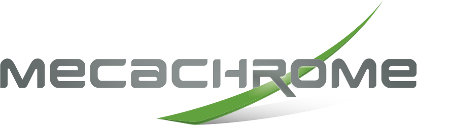
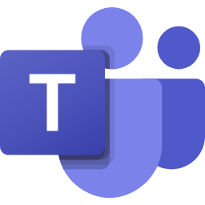

Rempli avant la session à partir du questionnaire. Les cases s'écrivent directement dans le deck.
Outils utilisés
Gratuit ou payant
Fréquence
Tâches qui reviennent
Confidentialité
Aisance moyenne
Règle du jour. Dans un outil grand public, on travaille avec des données fictives ou anonymisées. Les vraies données restent dans les outils validés par ton entreprise.
Marie Jolly, Summit Flow
Ingénieure, dix ans dans l'industrie aéronautique : avionneur, aménagement de cabine et métallurgie. Production, gestion de projet, industrialisation
J'accompagne des PME sur l'IA, l'automatisation et les agents IA, du cadrage à la mise en production
Je teste les outils avant de les montrer : ce que vous verrez aujourd'hui a été vérifié pour cette session

Formerles équipes, sur leurs vrais outils
Auditerles processus, pour voir ce qui gagne à être automatisé
Construireautomatisations, assistants, agents
La journée, module par module
Chaque module : un cadrage court, un atelier sur tes cas, une mise en commun, un quiz de deux minutes.
Échauffement : ton dernier usage, en 30 secondes
Ouvre l'outil d'IA que tu utilises vraiment
Retrouve ta dernière conversation utile
Montre-la : ce que tu demandais, ce qui a marché, ce qui a coincé
0:00
Personne ne juge l'historique. Même la recette de crêpes compte.
1
Module 1
Nouveaux modèles et modèles de raisonnement
Ce qui a changé depuis ta formation, et quand le mode réflexion vaut l'attente.
Tu saurassituer les modèles actuels et ce que le catalogue appelait O1, O3 ou R1
Tu ferasle même cas, en mode rapide puis en mode réflexion, dans ton outil
Tu repartiras avecta règle perso : quand activer la réflexion
Rappel express : ce que tu sais déjà
Cinq minutes, pas une de plus. Le reste de la journée est nouveau.
Un modèle prédit
Il produit le texte le plus probable à partir de ta demande et de son contexte. Il ne « sait » pas : il calcule.
Le contexte fait tout
Rôle, contexte, tâche, format : plus ta demande est précise, moins il devine. Ça n'a pas changé.
Il peut se tromper
Avec aplomb. Les modèles récents se trompent moins souvent, pas jamais : tu restes la dernière relecture.
Le catalogue parlait d'O1, O3 et R1. Voici où on en est.
Dans le catalogue
Ce que c'était
Ce qui l'a remplacé, au 12 novembre 2026
O1, O3 dépassé
Les premiers modèles « qui réfléchissent » d'OpenAI, à choisir à part dans ChatGPT
La réflexion est intégrée aux modèles GPT récents : on règle un niveau de réflexion au lieu de changer de modèle
R1 dépassé
Le modèle de raisonnement de DeepSeek, début 2025
DeepSeek V4 Pro et V4.1 Flash : le mode réflexion est activé par défaut, et se désactive
DeepSeek à nuancer
L'outsider chinois, gratuit et performant
Toujours là, modèles ouverts. Même questions de confidentialité qu'avant : on n'y met pas de données de l'entreprise
Le vrai changement. Le « modèle de raisonnement » n'est plus un produit à part : c'est un réglage, chez presque tous les éditeurs.
Les modèles phares, éditeur par éditeur
Éditeur
Le plus capable
Le rapide, pour le quotidien
La réflexion, chez lui
OpenAI · ChatGPT
GPT-6, présenté début septembre 2026
Les déclinaisons rapides de GPT-6
Des niveaux de réflexion à choisir dans ChatGPT. L'accès dépend de l'offre
Anthropic · Claude
Claude Opus 5.5 (22 sept.) et Claude Fable 5.2 (9 nov.)
Claude Sonnet 5.5, Claude Haiku 5.5
Réflexion adaptative : le modèle décide combien réfléchir
Google · Gemini
Gemini 4 Argon (13 oct., offres Google AI Pro et Ultra)
Gemini 3.6 Flash, pour tous les utilisateurs
Le mode Thinking, et Deep Think pour l'offre Ultra
Mistral · Vibe
Mistral Large 4 (6 oct., poids ouverts)
Mistral Small 4
Small 4 réunit réponse directe, raisonnement et code dans un seul modèle
Microsoft · Copilot
S'appuie sur des modèles d'OpenAI, et d'Anthropic si l'administrateur les active
Réponse rapide, Réponse approfondie, ou Automatique
Sources officielles consultées le 12 novembre 2026, détail dans les notes. Les noms changent vite : on vérifie dans ton outil, pas sur cette slide.
Le mode réflexion : quand il vaut l'attente
Réponse rapide
Reformuler, traduire, résumer
Un e-mail, un post, une idée de titre
Une question dont tu connais déjà la réponse
Réflexion activée
Des chiffres, un calcul, un tableau à analyser
Comparer des options avec des critères
Un raisonnement en plusieurs étapes, un cas ambigu
Le réflexe. Commencer en automatique ou en rapide. Passer en réflexion si la réponse reste superficielle, ou dès qu'il y a des chiffres.
Atelier 1 : le même cas, deux réglages
Objectif
Tester une de tes trois tâches en mode rapide, puis en mode réflexion, et décider lequel garder.
Durée
40 min
en solo, sur ton poste
Livrable attendu
Ta grille remplie : deux réponses comparées sur quatre critères, et ta règle en une phrase.
Critère de réussite
Tu sais dire, pour cette tâche, quel réglage tu choisis et pourquoi.
Prends une des trois tâches de ton questionnaire. Pas de donnée réelle : invente ou anonymise.
Écris ta demande une fois, propre : rôle, contexte, tâche, format.
Lance-la en mode rapide. Copie la réponse.
Lance exactement la même demande en mode réflexion. Note le temps d'attente.
Compare sur quatre critères : juste, utile, ce qu'il a fallu corriger, temps d'attente.
Écris ta règle : « pour ce type de tâche, j'utilise… »
À adapter selon l'outil du stagiaire
ChatGPT : choisis le niveau de réflexion dans le sélecteur de modèle. En gratuit, l'accès à la réflexion peut être limité
Copilot : Réponse rapide, puis Réponse approfondie
Mistral Vibe : même demande, réflexion activée si ton offre la propose
Gemini : 3.6 Flash, puis le mode Thinking
Claude : réflexion adaptative : compare plutôt Sonnet et Opus
Pas d'outil autorisé : binôme avec un voisin, ou démonstration projetée
0:00
Le mode réflexion, c'est le collègue qui dit « laisse-moi y réfléchir ». Parfois génial. Parfois juste plus long.
Mise en commun : ce que vous avez vu
Chacun montre son écran deux minutes. On note ici ce qui revient.
Où ça a aidé
Sur quelle tâche la réflexion a-t-elle vraiment changé la réponse ?
Où ça n'a rien changé
Où la version rapide suffisait-elle ?
Vos règles
Une règle par personne, en une phrase.
À retenir. La réflexion se choisit tâche par tâche. Le bon réflexe ne dépend pas du modèle à la mode, mais de ta tâche.
Quiz du module 1 : deux minutes
Quiz en ligneQuiz en ligne : lien à coller dans SESSION.quiz.m1
Chacun répond sur son téléphone, puis on révèle les réponses une par une (flèche droite).
1O1, O3 et R1 sont les modèles de raisonnement les plus récents.
FauxIls ont été dépassés : la réflexion est désormais un réglage intégré aux modèles récents.
2Le mode réflexion est plus utile pour analyser des chiffres que pour reformuler un e-mail.
VraiIl apporte surtout sur les calculs, les comparaisons et les raisonnements en étapes.
3Un modèle plus récent ne fait plus d'erreurs.
FauxIl en fait moins sur certaines tâches, pas zéro. La relecture humaine reste la règle.
4Pour comparer deux réglages, il faut garder exactement la même demande.
VraiSinon on compare deux demandes, pas deux réglages.
Pause, dix minutes
On reprend à l'heure du programme. Les dessins et les cases remplies restent en place.
2
Module 2
ChatGPT : projets, assistants, tâches
Passer de la conversation jetable à un espace de travail qui se souvient du contexte.
Tu saurasà quoi servent les projets, les assistants spécialisés et les tâches planifiées
Tu ferasun projet pour un dossier récurrent de ton travail, puis une tâche ou un assistant
Tu repartiras avecun projet qui marche et que tu rouvriras lundi
ChatGPT ne se résume plus à une conversation
Projets
Un espace par dossier : tes conversations, tes fichiers et tes instructions au même endroit. Il garde le contexte d'une conversation à l'autre.
Assistants spécialisés
Une consigne métier écrite une fois, réutilisable par toi ou ton équipe. Les GPT personnalisés, et côté entreprise les agents d'espace de travail.
Tâches planifiées
Une demande qui se relance seule, une fois ou à intervalle régulier, et dont le résultat t'est notifié.
Le mode agent
Il enchaîne plusieurs étapes, sur le web et dans tes applications connectées, et te demande avant les actions sensibles.
L'idée. On passe de la question posée une fois à un espace de travail qui se souvient, se répète et agit.
Un projet, trois ingrédients
Les instructions
Qui tu es, pour quoi ce projet existe, comment répondre. Elles s'appliquent à toutes les conversations du projet.
Les fichiers
Tes documents de référence : trame, procédure, exemples réussis. Il les consulte, il ne les apprend pas par cœur.
Les conversations
Rangées ensemble, elles nourrissent le contexte du projet. Un projet partagé garde une mémoire propre au projet.
Avant de partager un projet
Les personnes invitées voient les fichiers et les conversations du projet. Rien de confidentiel dedans si l'outil n'est pas validé par ton entreprise.
Assistant ou tâche planifiée : lequel pour toi ?
Assistant spécialisé
Tâche planifiée
Qui déclenche
Toi, quand tu en as besoin
L'horloge : chaque lundi, chaque matin, une fois
Pour quoi faire
Un geste métier toujours fait de la même façon : une fiche, une réponse type, une relecture
Une veille, un rappel, une synthèse qui doit arriver sans que tu y penses
Ce qu'il te faut
Des instructions très claires et un ou deux exemples réussis
Une demande qui se suffit à elle-même, sans ton aide au moment de l'exécution
La limite
Il ne fait que ce qu'on lui a décrit
Personne ne relit au moment où elle tourne : on vérifie le résultat
Atelier 2 : ton premier vrai projet
Objectif
Construire un projet pour un dossier récurrent de ton travail, puis lui ajouter une tâche ou un assistant.
Durée
85 min
en solo, sur ton poste
Livrable attendu
A : un projet testé sur trois demandes. B : une tâche planifiée ou un assistant qui tourne.
Critère de réussite
Un collègue pourrait ouvrir ton projet lundi et s'en servir sans toi.
A, 45 min. Choisis un dossier récurrent : relances, appels d'offres, comptes rendus…
Crée le projet et ses instructions : qui tu es, à quoi il sert, le format attendu.
Dépose deux documents non confidentiels : une trame, un exemple réussi.
Teste trois demandes. Corrige les instructions après chaque essai.
B, 40 min. Ajoute une tâche planifiée ou un assistant, et vérifie son premier résultat.
À adapter selon l'outil du stagiaire
ChatGPT gratuit : limites possibles : en B, l'assistant plutôt que la tâche
ChatGPT payant : projet, tâche planifiée et assistant
Copilot : Notebooks en A, requête planifiée ou nouvel agent en B
Mistral Vibe : dossier de projet et bibliothèque, puis tâche planifiée
Gemini ou Claude : compétence enregistrée (Gemini), projet (Claude)
0:00
Un projet où toi seul retrouves les choses, ce n'est pas un projet, c'est un tiroir.
Mise en commun : ce que vous avez vu
Chacun montre son écran deux minutes. On note ici ce qui revient.
Le plus utile
Quel projet servira dès lundi ? Pourquoi celui-là ?
Ce qui a coincé
Limite d'offre, instructions floues, document mal compris ?
Instructions qui marchent
Une phrase d'instructions que les autres devraient copier.
À retenir. Un projet vaut ce que valent ses instructions. On les réécrit après chaque mauvaise réponse, pas une fois pour toutes.
Quiz du module 2 : deux minutes
Quiz en ligneQuiz en ligne : lien à coller dans SESSION.quiz.m2
Chacun répond sur son téléphone, puis on révèle les réponses une par une (flèche droite).
1Les fichiers d'un projet sont appris par cœur par le modèle.
FauxIls sont consultés au moment de la demande. Les faits clés vont dans les instructions.
2Une tâche planifiée peut tourner pendant que tu ne regardes pas ChatGPT.
VraiC'est son intérêt, et c'est pour ça qu'on vérifie son résultat.
3Partager un projet, c'est partager aussi ses fichiers.
VraiLes personnes invitées accèdent au contenu du projet : rien de confidentiel dedans.
4Pour une réponse toujours faite de la même façon, l'assistant spécialisé est le bon choix.
VraiIl porte la consigne métier, toi tu le déclenches quand tu en as besoin.
Déjeuner
On reprend à l'heure du programme. Les dessins et les cases remplies restent en place.
3
Module 3
L'écosystème Mistral
L'alternative française : ce que fait Vibe (l'ancien Le Chat), et quand la choisir.
Tu saurasce qui a changé chez Mistral en 2026 et ce que ça change pour une PME
Tu feraston cas du matin dans Vibe, une image, et le compte rendu d'un mémo vocal
Tu repartiras avecton avis argumenté : Vibe, pour quoi faire chez toi
Le Chat s'appelle désormais Vibe
Le 28 mai 2026, Mistral a renommé son application : Le Chat devient Vibe. Conversations, réglages et abonnements ont été conservés.
Même adresse : chat.mistral.ai, et les applis mobiles
Trois modes : Conversation, Work pour les tâches longues, Code
Des modèles de Mistral, entraînés et servis en Europe
Offre
Pour qui
Free
Découvrir : messages, recherches web et images en quantité limitée
Équipe : 24,99 $ HT par utilisateur et par mois, espace partagé, administration
Enterprise
Déploiement privé, sur devis
Prix affichés en dollars sur mistral.ai le 12 novembre 2026, hors taxes. Le prix en euros est à lire sur la page tarifs, en choisissant l'euro.
Ce qu'on fait dans Vibe, pour le travail
Mode Work
Il prépare un plan, te le fait valider, puis travaille avec tes connecteurs : recherche, synthèse, livrable dans le Canvas.
Projets et bibliothèques
Des dossiers de projet et des bibliothèques de documents pour garder le contexte.
Images
Génération et retouche d'images à partir d'une description, en quantité limitée en gratuit.
Voix
Enregistrer ou déposer un audio, obtenir la transcription, poser des questions, en tirer un résumé.
Aussi : tâches planifiées (une fois, chaque jour, chaque semaine, chaque mois), compétences réutilisables, plus de cent connecteurs, tableurs et présentations.
Réglage à connaître : l'utilisation de tes conversations pour l'entraînement se désactive dans les paramètres, sur toutes les offres.
Pourquoi Mistral compte pour une PME française
Hébergé en Europe
Mistral Large 4 a été entraîné dans les centres de données de Mistral en Europe, avec un déploiement européen opéré de bout en bout.
Modèles ouverts
Large 4 et Small 4 ont des poids ouverts : une entreprise peut les installer chez elle. Utile quand les données ne doivent pas sortir.
La voix, en français
Voxtral 3, le 20 octobre 2026 : transcription en plus de 50 langues, qui distingue qui parle, et synthèse vocale.
À garder en tête. « Français » ne veut pas dire « autorisé chez toi ». La règle de ton entreprise passe avant le drapeau.
Atelier 3 : ton cas, version française
Objectif
Refaire ton cas du matin dans Vibe, puis tester deux usages que ton outil habituel fait peut-être moins bien.
Durée
40 min
en solo, sur ton poste
Livrable attendu
Trois lignes de comparaison avec ton outil habituel, une image utile, le compte rendu d'un mémo vocal.
Critère de réussite
Tu sais dire ce que Vibe fait aussi bien, mieux ou moins bien que ton outil, sur tes cas.
Ouvre Vibe (chat.mistral.ai). Pas de compte ? Le compte gratuit suffit.
Relance exactement la demande de l'atelier 1 ou de ton projet. Compare en trois lignes.
Génère une image utile à ton travail : visuel de note interne, illustration de post. Trois itérations maximum.
Enregistre un mémo vocal d'une minute (une réunion fictive), puis demande un compte rendu structuré.
Note ton verdict : pour quoi tu utiliserais Vibe chez toi.
À adapter selon l'outil du stagiaire
Déjà sur Mistral : va plus loin : mode Work sur une recherche, ou une tâche planifiée
Entreprise qui interdit les outils non validés : binôme avec un voisin autorisé, ou démonstration projetée
Pas de micro : dépose un court fichier audio fourni par la formatrice
Outil habituel Copilot : compare surtout la partie compte rendu avec Teams
0:00
Trois itérations pour l'image : à la quatrième, ce n'est plus de l'IA, c'est de la procrastination.
Mise en commun : ce que vous avez vu
Chacun montre son écran deux minutes. On note ici ce qui revient.
Aussi bien, ou mieux
Où Vibe a-t-il fait jeu égal avec ton outil, ou mieux ?
Moins bien
Où a-t-il moins bien fait ?
Pour quoi chez toi
Un usage précis où tu l'utiliserais.
À retenir. Avoir deux outils, ce n'est pas du luxe : c'est pouvoir choisir selon la tâche et selon la donnée.
Quiz du module 3 : deux minutes
Quiz en ligneQuiz en ligne : lien à coller dans SESSION.quiz.m3
Chacun répond sur son téléphone, puis on révèle les réponses une par une (flèche droite).
1Le Chat de Mistral a été renommé Vibe en 2026.
VraiLe 28 mai 2026. Les conversations et abonnements ont été conservés.
2Un outil français est automatiquement autorisé dans toutes les entreprises françaises.
FauxLa règle interne de l'entreprise s'applique, quel que soit l'outil.
3Vibe peut transcrire un audio et en tirer un résumé.
VraiLe mode vocal transcrit un enregistrement ou un fichier, puis répond à tes questions.
4Mistral Large 4 peut être installé sur les serveurs d'une entreprise.
VraiSes poids sont ouverts, sous la licence de Mistral.
4
Module 4
Comparatif des outils du marché
Texte, image, vidéo, audio, comptes rendus : on teste au lieu de croire.
Tu saurasqui fait quoi aujourd'hui, catégorie par catégorie
Tu ferasun banc d'essai en binôme : le même brief dans deux ou trois outils
Tu repartiras avecune recommandation justifiée par un test, pas par une réputation
Image et vidéo : qui fait quoi
Outil
À retenir
Image
Nano Banana (Google, dans Gemini)
Créer et retoucher une image en conversation
Image
Génération d'images dans ChatGPT
Directement dans la conversation, utile pour des visuels simples
Image
Vibe (Mistral)
Génération et retouche, limitées en gratuit
Image, vidéo
FLUX 3 (Black Forest Labs, Allemagne)
Images, et vidéos jusqu'à 20 secondes avec son ; poids ouverts disponibles
Image
Midjourney
La référence pour le rendu artistique, sur abonnement
Vidéo
Veo 3.1 et Gemini Omni (Google)
Vidéo avec son. Omni crée et modifie des vidéos dans l'application Gemini, pour les abonnés Google AI
Versions et accès vérifiés sur les pages des éditeurs le 12 novembre 2026, sauf Midjourney et ChatGPT : voir a-verifier.md.
Audio et musique : voix, podcasts, jingles
ElevenLabs
Voix de synthèse très naturelles (modèle Eleven v4), doublage, musique, transcription, agents vocaux.
Voxtral TTS 3
La synthèse vocale de Mistral : plus de 35 langues, voix qui s'adaptent au ton de la conversation.
Suno v6
Chansons et musiques complètes à partir d'un texte, depuis le 9 septembre 2026.
Lyria
Le modèle musical de Google DeepMind, utilisé dans les outils de Google.
Voix et musique : prudence
Pas de clonage de la voix d'un collègue sans son accord écrit. Pour un usage commercial, lire les conditions de licence de chaque outil.
Comptes rendus de réunion : le match utile
Outil
Ce qu'il fait
Ce qu'il faut

Teams + Copilot
Pendant et après la réunion : qui a dit quoi, points d'accord, actions
Une licence Copilot. Si l'organisateur coupe Copilot, l'enregistrement et la transcription s'arrêtent aussi
Google Meet
« Prendre des notes pour moi » : notes rangées dans Google Docs, résumé envoyé à l'organisateur
Une édition Workspace ou une offre Google AI éligible. Français pris en charge, une langue par réunion
Vibe (Mistral)
Transcription et résumé d'un enregistrement ou d'un fichier audio
Le compte Vibe. Côté API, Voxtral Transcribe 3 distingue les intervenants
Fireflies
Un assistant qui rejoint tes visios, transcrit et résume
Offre gratuite, puis payante par utilisateur. Plus de 100 langues, conformité RGPD annoncée
Avant d'enregistrer. On prévient tous les participants, et on vérifie que l'outil est autorisé par l'entreprise. Toujours.
Texte et raisonnement, puis cinq critères pour choisir
Pour le texte
Les modèles phares se valent sur beaucoup de tâches courantes. Les écarts se voient sur tes tâches : c'est pour ça qu'on teste.
Le tableau des modèles du module 1 reste la référence du jour.
Les données : ce que j'ai le droit d'y mettre
L'intégration : est-ce dans mes outils de tous les jours ?
La qualité, testée sur ma tâche, pas sur une démo
Le coût, gratuit compris : ce que je paie, ce que je donne
L'adoption : mes collègues s'en serviront-ils ?
Atelier 4 : banc d'essai en binôme
Objectif
Faire passer le même brief dans deux ou trois outils d'une même catégorie, et recommander l'un d'eux sur preuve.
Durée
45 min
en solo, sur ton poste
Livrable attendu
Une grille de comparaison remplie et une recommandation en une phrase, présentée aux autres.
Critère de réussite
Ta recommandation s'appuie sur ton test, pas sur la réputation de l'outil.
Formez trois binômes. Chaque binôme tire une catégorie : texte, image ou compte rendu.
Écrivez un brief unique, tiré d'une vraie tâche d'un des deux (données fictives).
Passez-le dans deux ou trois outils accessibles à l'un de vous.
Remplissez la grille : qualité, temps, facilité, confidentialité, coût connu.
Rédigez la recommandation : « pour ce besoin, on prend… parce que… »
À adapter selon l'outil du stagiaire
Binômes : à former selon les outils déclarés : un utilisateur payant avec un utilisateur gratuit
Catégorie image : Gemini, ChatGPT et Vibe sont accessibles en gratuit avec des limites
Catégorie compte rendu : même audio de secours d'une minute pour tout le monde
Catégorie audio, si un binôme est en avance : un court texte lu par deux voix de synthèse
0:00
Règle du banc d'essai : on n'a pas le droit de dire « de toute façon je préfère l'autre » avant d'avoir rempli la grille.
Mise en commun : ce que vous avez vu
Chacun montre son écran deux minutes. On note ici ce qui revient.
Texte
Recommandation du binôme texte, et sa preuve.
Image
Recommandation du binôme image, et sa preuve.
Compte rendu
Recommandation du binôme compte rendu, et sa preuve.
À retenir. Le bon outil, c'est celui qui passe ton test et que ton entreprise autorise. Pas celui dont tout le monde parle.
Quiz du module 4 : deux minutes
Quiz en ligneQuiz en ligne : lien à coller dans SESSION.quiz.m4
Chacun répond sur son téléphone, puis on révèle les réponses une par une (flèche droite).
1Pour enregistrer une réunion, il suffit que l'outil soit gratuit.
FauxIl faut prévenir les participants, et utiliser un outil autorisé par l'entreprise.
2Dans Teams, les fonctions Copilot en réunion demandent une licence Copilot.
VraiC'est ce que précise la documentation de Microsoft.
3Une musique générée par IA est toujours libre de droits.
FauxÇa dépend de l'outil, de l'offre et de ses conditions.
4Le premier critère pour choisir un outil, ce sont les données qu'on a le droit d'y mettre.
VraiAvant la qualité, avant le prix.
Pause, dix minutes
On reprend à l'heure du programme. Les dessins et les cases remplies restent en place.
5
Module 5
Optimiser ses workflows
Intégrer les nouveaux outils dans le travail, sans se faire déborder par le prochain.
Tu saurasles trois niveaux : la demande réutilisable, l'assistant, la tâche automatique
Tu ferasla fiche d'un workflow réel, avec son point de contrôle humain
Tu repartiras avecun workflow testé une fois, prêt à tourner
Trois niveaux, du plus simple au plus automatique
1. La demande réutilisable
Une demande bien écrite, enregistrée et relancée à la main. Le niveau qui sert le plus souvent.
2. L'assistant ou le projet
Le contexte et les consignes vivent dans l'outil. Ce que tu as construit au module 2.
3. La tâche automatique
Ça tourne sans toi : tâche planifiée, ou un outil d'automatisation qui relie tes logiciels.
La règle. On monte d'un niveau seulement quand le niveau du dessous marche déjà bien.
Automatiser la production de contenu, sans perdre la main
Brief
Le sujet, la cible, le ton, les sources. Toi.
Brouillon
L'IA rédige, à partir d'un assistant ou d'un projet.
Relecture
Toi : faits, chiffres, ton, ce qui engage l'entreprise.
Déclinaisons
L'IA adapte : post, e-mail, résumé, image.
Validation
Un humain publie. Jamais l'outil seul.
Le point de contrôle. Il est au milieu de la chaîne, pas à la fin : on relit le brouillon avant de le décliner, sinon on décline les erreurs.
Anticiper : ce qui change, ce qui reste
Ce qui change tous les trois mois
Les noms des modèles et des offres
Les prix et les limites
Les menus et les fonctions
Ce qui reste
Une demande claire, avec un exemple
Tes données, et ce que tu as le droit d'en faire
La relecture humaine de ce qui engage
Ta routine de veille. Un quart d'heure par mois : les notes de version de ton outil principal, un essai d'une nouveauté sur une vraie tâche, et c'est tout.
Atelier 5 : ton workflow sur une page
Objectif
Décrire un workflow réel de ton travail, intégrer l'outil choisi aujourd'hui, et le faire tourner une fois.
Durée
30 min
en solo, sur ton poste
Livrable attendu
Une fiche : déclencheur, entrées, étapes faites par l'IA, point de contrôle humain, sortie, outil. Plus un premier essai.
Critère de réussite
Le point de contrôle humain est écrit, et le workflow a tourné au moins une fois.
Prends une tâche récurrente (ton projet du module 2 compte).
Écris le déclencheur : quand ça démarre, qui le lance.
Liste les entrées et les étapes que l'IA fait.
Place le point de contrôle humain : qui relit quoi, avant quelle étape.
Choisis le niveau (1, 2 ou 3) et l'outil. Fais-le tourner une fois.
À adapter selon l'outil du stagiaire
Niveau 1 : une demande enregistrée dans l'outil du stagiaire
Niveau 2 : le projet ou l'assistant construit au module 2
Niveau 3 : tâche planifiée dans ChatGPT ou Vibe, requête planifiée dans Copilot
Aucun outil autorisé : fiche sur papier, essai en démonstration
0:00
Si ton workflow tient sur une page, il tiendra lundi. S'il faut un poster A0, il ne tiendra pas jusqu'à mercredi.
Mise en commun : ce que vous avez vu
Chacun montre son écran deux minutes. On note ici ce qui revient.
Le déclencheur
Quand votre workflow démarre-t-il ?
Le point de contrôle
Qui relit quoi, et à quel moment ?
Le premier essai
Qu'est-ce qui a marché du premier coup ?
À retenir. Un workflow qui marche, c'est d'abord une tâche simple, faite souvent, avec un humain au bon endroit.
Quiz du module 5 : deux minutes
Quiz en ligneQuiz en ligne : lien à coller dans SESSION.quiz.m5
Chacun répond sur son téléphone, puis on révèle les réponses une par une (flèche droite).
1Il faut viser tout de suite l'automatisation complète d'une tâche.
FauxOn monte d'un niveau quand le précédent marche déjà bien.
2Dans une chaîne de contenu, on relit le brouillon avant de le décliner.
VraiSinon on décline aussi les erreurs.
3Les noms des modèles et des offres changent souvent.


 R1 dépassé
R1 dépassé
 Nano Banana (Google, dans Gemini)
Nano Banana (Google, dans Gemini) Midjourney
Midjourney Suno v6
Suno v6